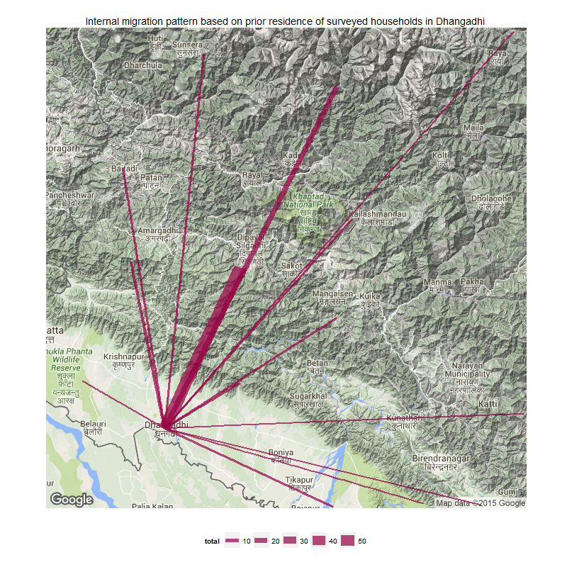
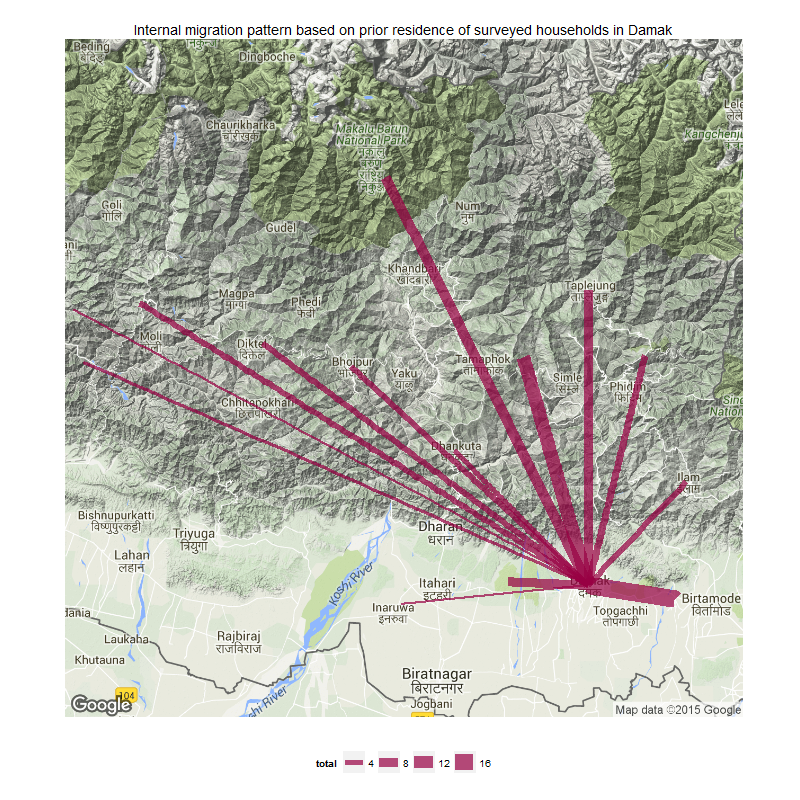
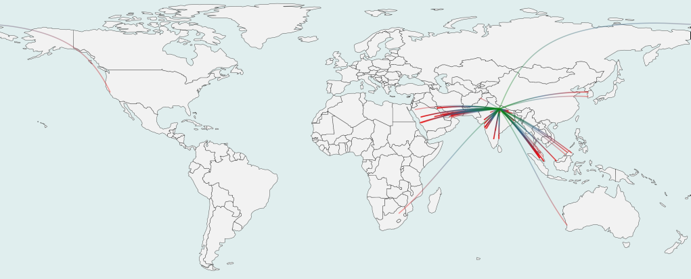

Transnational networks and off-farm livelihood strategies among farming households: case studies from the Nepali Tarai
Agrifood Research Network Conference
Adelaide, South Australia
7-10 December 2016
Asheshwor Shrestha
asheshworman.shrestha@adelaide.edu.au,
PhD Candidate,
Geography, Environment & Population,
The University of Adelaide
Outline
- Background
- State of agriculture in the Tara
- Mobiliites past and present
- Emerging threats from global environmental change
- How environmental changes and human mobility interact in the Tarai
- Conclusion
Objectives
- Exlore how agricultural risks translates into mobilities
- Households' handeling of risks through in-situ and ex-situ livelihoods
- Non-linear relationship between environment and human mobilitity in the Tarai
1. Background
- Features of the Tarai
- Study sites
Study locations
Study sites
Dhangadhi, Far-west Nepal
Damak, East Nepal
Study sites
- Rural characterstics despite being classified as municipalities
- Environmental transfomrations by clearing forest land to make way for paddy fields beginning in the 1960s
- Tarai population grew from 35.2 percent of Nepal’s population in 1952/53 to 50.3 percent in 2011
- Underdevelopment and social inequalities

2. State of agriculture
- Rural characterstics despite being classified as municipalities
- Features of Tarai agriculture
- Tredns in production
State of agriculture
- More than 53 percent of land holdings in Nepal consisted of land with areas less than 0.5 hectares [Agricultural Sample Census]
- Traditional agricultural practices with little modernisation
- The relative contribution to national GDP from the agriculture sector declined significantly from 68 percent in 1971 to 37 percent in 2011
State of agriculture
- Grain imports have risen, especially since the 2000s and exports have been nil in recent years
4. Mobilities past and present
- Historical in-migration to the Tarai
- Historical out-migration from the Tarai
- Contemporary out-migration trend
- Human capital of migrants
- Remittance by destination region
Mobilities
- In-migration to the Tarai after eradication of Malaria in the 1960s
- State-led program to resettle victims of natural hazards
- Supplementary income from working in neighbouring India due to similarity in culture, language and physical apperances
Mobilities
- 6.8 percent of absentee population in 2011 compared to just 3.2 percent in 2001 [Kansakar (2003); CBS (2012); CBS (2001)]
Mobilities
- Contemporary out migration trend is towards new international destinations [work permit graphs, un stock migrants graph]
Historical migration patterns
Historical migration patterns
 Historic internal migration pattern based on prior residence in Dhangadhi (left) and Damak (right)
Contemporary destinations for migrant workers
Contemporary destinations for migrant workers
Destination regions of migrant members from surveyed households
one arc represents one migrant from surveyed households
Migrants' human capital
Formal education of migrants by destination region
Remittances by destination
4. Emerging threats
- Characterstics of sampled households
- Perceptions and impacts of environmental change
- Historical experience with migration
- In-situ adaptation in agriculture
- Ex-situ adaptation
Envrionmental change
- Monsoon rainfall vital for paddy
- Dry fields needed for wheat growth during winter
- Consecutive dry days have increased at all stations, and consecutive wet days have decreased
- the usual normal amount of growing season rainfall is being experienced in fewer days
Trends in irrigation
Climate impact and agricultural yield
"Rainfall has become untimely. It does not rain during plantation time"
(12 respondents in questionnaire survey)
"The canals dried because of drought. We do not have private irrigation pump so we rely on rainfall."
(female-57 from Damak, 17 Dec 2013)
"We get more output now but it's also costly due to [chemical] fertilizers."
(4 respondents from questionnaire survey)
7. Implications - environment-human-mobility nexus
- Characterstics of sampled households
- Perceptions and impacts of environmental change
- Historical experience with migration
- In-situ adaptation in agriculture
- Ex-situ adaptation
5. Implications and summary of findings
- This study combines the physical evidence on environmental changes with the perception of such changes - this could be a framework for understanding and planning for adaptation
- This research establishes migration as a vital form of adaptation for Tarai farmers which should be mainstreamed into state policies.
- By tapping on the trans-local network, the resilience of migrants' household and the community is expected to be strengthened
Findings summary
- no significant decline in agricultural activity by households with a migrant as the remaining members continute the practice
- labour migration opportunities remain an important factor in household decision making; low rainfall and failure of irrigation systems prompted some farmers to leave land fallow
- migrants going to India and the Middle East have significantly lower formal education compared to internal migrants and migrants going to new destinations in SE Asia. Similar findings by Findlay (2011), and Massey et al. (1993)
Findings summary
- The popularity of international destinations disagrees with the theories that most of the environmental change initiated movements will be within national/regional boundaries (Findlay, 2011) perhaps because to the established international networks and any pressure due to environmental change simply reinforces these.
- Since the use of remittances for basic household activities and the fact that remittance income is disproportionately larger than income made at home, the trend in foreign employment is expected to continue
Discussion
Questions / comments
Slides: asheshwor.github.io/agrifood
Slides pdf: asheshwor.github.io/agrifood?print-pdf
Press key for references, acknowledements and attributions
References
- Beck, U 1992, 'From Industrial Society to the Risk Society: Questions of Survival, Social Structure and Ecological Enlightenment', Theory, Culture and Society, vol. 9, no. 1, pp. 97-123.
- Findlay, AM 2011, 'Migrant destinations in an era of environmental change', Global Environmental Change, vol. 2011.
- Gurung, H. (1989). Regional Patterns of Migration in Nepal. Hawaii, USA: East-West Center.
- IPCC, 2007: Summary for Policymakers. In: Climate Change 2007: Impacts, Adaptation and Vulnerability. Contribution of Working Group II to the Fourth Assessment Report of the Intergovernmental Panel on Climate Change, M.L. Parry, O.F. Canziani, J.P. Palutikof, P.J. van der Linden and C.E. Hanson, Eds., Cambridge University Press, Cambridge, UK, 7-22.
- Kansakar, V. B. S. (1985). Land resettlement policy as a population distribution strategy in Nepal. In L. A. Kosinski & K. M. Elahi (Eds.), Population redistribution and development in South Asia. Dordrecht, Holland: D. Reidel Publisihing Company.
- Massey, DS, Arango, J, Hugo, G, Kouaouci, A, Pellegrino, A & Taylor, JE 1993, 'Theories of International Migration: A Review and Appraisal', Population Council, vol. 19, no. 3, pp. 431-466.
- World Bank 2014, World Bank development indicators, URL: http://data.worldbank.org/indicator/NY.GDP.PCAP.CD/countries accessed 3-08-2014
Acknowledgements
- Principal supervisor: Dr. Douglas Bardsley, co-supervisors: Dr. Dianne Rudd and the late Prof. Graeme Hugo
- Field-work funding from Department of Geography, Environment & Population, The University of Adelaide
- Field research assistants Shreekrishna Chaudhary and Sujan Ranjitkar
- Local contact persons - Umesh Dhimal, Tejpal Dhimal, Laxmi Niraula and Kanchan Ojha
- Special thanks to Damak Municipality, Dhangadhi Municipality, Mercycorps Nepal, ADF Nepal Pvt. Ltd., and Neeraj Dangol
Attributions
- Slide framework: Reveal.js
- Fonts: Google fonts and Font Awesome
- Study location map data for Damak and Dhangadhi: Department of Survey, Kathmandu, Nepal
- Study location map: CARTO
- Interactive Highchart graphs: highcharter R package version 0.4.0